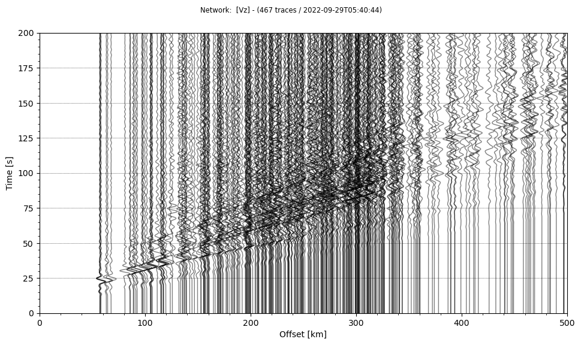
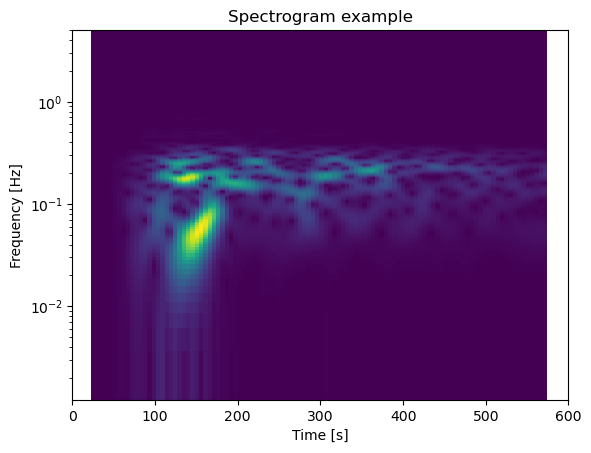
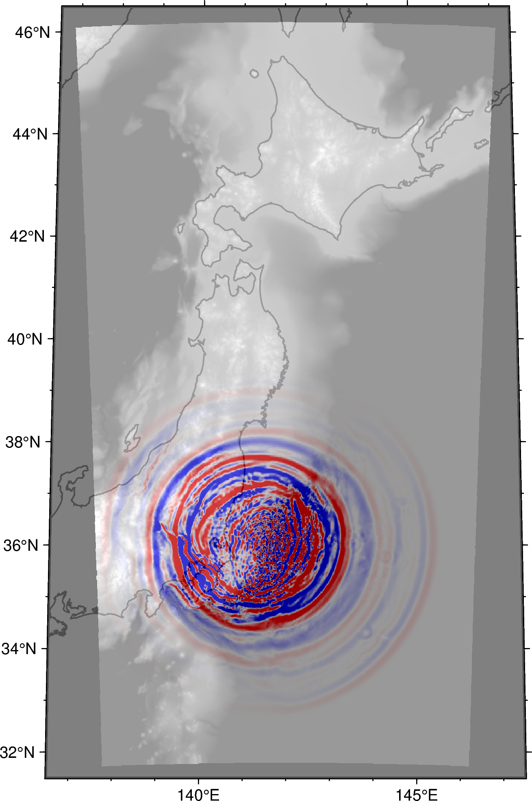

Python integration¶
New in version 5.2.1!
Python is a rapidly glowing ecosystem for data analysis and visualization in seismology. Followings are some tips & tricks for those who would like to handle the input/output of the OpenSWPC in python. The following example uses
- ObsPy
- numpy
- xarray
- PyGMT
under the Jupyter Notebook environment.
Input parameter files¶
A python module OpenSWPC/src/tools/swpc.py contains several utility functions to handle input parameter to the OpenSWPC. To use it, first add this directory to the module path:
1 2 | |
Then, the module can be loaded as follows:
1 | |
A function prm_new() create the default parameter set. These parameters are equivalent to that defined in example/input.inf.
1 | |
In python, parameter data are stored in a simple dictionary as shown below. Thus, the user can easily change the parameter values if necessary.
1 | |
1 2 3 4 5 6 7 8 9 10 11 12 13 14 15 16 17 18 19 20 21 22 23 24 25 26 27 28 29 30 | |
Also, one can read the parameter file by using prm_read() function. The following
1 | |
Apply some modification to the prm1 ...
1 2 3 4 | |
To save the parameter to use in OpenSWPC, use prm_print() function. In default, this function exports all parameters to standard output. The followings are an example to save the parameter to file:
1 2 | |
Confirm the modified parameter is stored in the specified file:
1 | |
1 2 3 4 5 6 7 8 9 10 | |
Output waveforms¶
ObsPy is a de-facto standard on reading seismograms and applying basic manipulation of seismic data. Since the ObsPy can directly read the SAC-formatted seismogram, one can easily import the output waveform data generated by the OpenSWPC without any additional processings.
Note that some user reported that the ObsPy occasionaly fails to specify the format when it reads SAC files produced by OpenSWPC properly. It is recommended to add format='sac' option to obspy.read() function to explicitly tell this is SAC-formatted file.
1 | |
/path/to/OpenSWPC/output/wav/swpc_N.N.AAKH.Vz.sac
1 | |
1 | |
1 2 3 4 | |
1 | |

1 | |

Output snapshots¶
2D snapshot data produced by OpenSWPC follows the CF metadata conventions of NetCDF format. There seems several libraries to read NetCDF files, and here is an exaple using xarray which has an affinity to the PyGMT.
1 | |
1 | |
1 | |
xarray dataset contains multiple list (array) data, as the NetCDF data format:
1 | |
<xarray.Dataset>
Dimensions: (x: 1067, y: 533, t: 600)
Coordinates:
* x (x) float32 -799.2 -797.8 -796.2 -794.8 ... 795.2 796.8 798.2 799.8
* y (y) float32 -399.2 -397.8 -396.2 -394.8 ... 394.2 395.8 397.2 398.8
* t (t) float32 0.025 1.025 2.025 3.025 ... 596.0 597.0 598.0 599.0
lon (y, x) float32 ...
lat (y, x) float32 ...
Data variables:
rho (y, x) float32 ...
lambda (y, x) float32 ...
mu (y, x) float32 ...
topo (y, x) float32 ...
Vx (t, y, x) float32 ...
Vy (t, y, x) float32 ...
Vz (t, y, x) float32 ...
max-V (y, x) float32 ...
max-H (y, x) float32 ...
max-A (y, x) float32 ...
Attributes: (12/26)
generated_by: SWPC
codetype: SWPC_3D
hdrver: 6
title: swpc_N
exedate: 1664430044
ns1: 1067
... ...
evdp: 43.18
evx: -320.6624
evy: -66.1461
clon: 142.0
clat: 39.0
phi: 0.0Each data can be obtained by appending data varialbe name after . of the object:
1 | |
1 2 3 4 5 6 7 8 9 10 11 12 13 | |
1 | |
1 2 3 4 5 6 7 8 9 10 11 12 13 | |
1 | |
1 2 3 4 5 6 7 8 9 10 11 12 13 | |
... and time slice of the wavefield can be reffered by the sequential time step number like
1 | |
1 2 3 4 5 6 7 | |
Note that the OpenSWPC performs simulations in the Cartesian coordinate. The result is mapped to the geographical cooridnate upon output, but the data is not evenly-spaced in longitude-latitude system. Thus, interpolation and/or resampling may be necessary to plot the wavefield on a map.
1 2 | |
1 2 3 4 5 6 7 8 9 10 11 12 13 14 15 16 17 | |
1 2 3 4 5 6 7 8 9 10 11 12 13 14 15 16 | |
